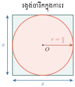
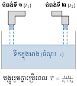

- បកស្រាយចំណោទដើម្បីបង្ហាញសញ្ញាណកន្សោមសនិទាន
- សម្រួលកន្សោមសនិទាន
- ធ្វើប្រមាណវិធីលើកន្សោមសនិទាន ។
1. កន្សោមសនិទាន
ឧទាហរណ៍ ៖ ចំនួនសនិទានដែលយើងបានស្គាល់ដូចជា \(\displaystyle \frac{2}{3}\), \(\displaystyle \frac{-21}{5}\), \(\displaystyle \frac{0}{9}\) មានទម្រង់ \(\displaystyle \frac{a}{b}\) ដែល \(\displaystyle a\) និង \(\displaystyle b\) ជាចំនួនគត់រ៉ឺឡាទីបហើយ \(\displaystyle b \ne 0\) ។
យើងនឹងសិក្សាបន្តនូវចំនួនសនិទានដែលមានភាគយកនិងភាគបែងជាឯកធា ឬពហុធា ដូចជា \(\displaystyle \frac{x}{y}\), \(\displaystyle \frac{a+b}{b}\), \(\displaystyle \frac{1+x}{x^2-1}\) ហៅថា កន្សោមសនិទាន ។
កន្សោមសនិទានជាកន្សោមមានទម្រង់ \(\displaystyle \frac{A}{B}\) ដែល \(\displaystyle A\) និង \(\displaystyle B\) ជាឯកធា ឬពហុធា ហើយ \(\displaystyle B \ne 0\) ។
សម្គាល់ ៖ កន្សោម \(\displaystyle \frac{x}{\sqrt{y}}\) ពុំមែនជាកន្សោមសនិទានទេ ព្រោះ \(\displaystyle \sqrt{y}\) ពុំមែនជាឯកធា ឬពហុធា ។
បកស្រាយឃ្លាគណិតវិទ្យាខាងក្រោមជាកន្សោមសនិទាន ៖
- ក. ផលធៀបនៃពីរចំនួនគត់តគ្នា
- ខ. ផលធៀបរវាងផ្ទៃក្រឡានិងបរិមាត្រនៃចតុកោណកែងដែលមានវិមាត្រ \(\displaystyle x\) និង \(\displaystyle y\) ។
ដំណោះស្រាយ ៖
- ក. បើ \(\displaystyle n\) ជាចំនួនគត់ នោះចំនួនគត់បន្ទាប់គឺ \(\displaystyle n+1\) ។ ដូច្នេះផលធៀបនៃពីរចំនួននោះគឺ \(\displaystyle \frac{n}{n+1}\) ។
- ខ. ផ្ទៃក្រឡាចតុកោណកែងគឺ \(\displaystyle xy\) និងបរិមាត្រគឺ \(\displaystyle 2(x+y)\) ។ ដូច្នេះផលធៀបរវាងផ្ទៃក្រឡានិងបរិមាត្រគឺ \(\displaystyle \frac{xy}{2(x+y)}\) ។
រកផលធៀបរវាងផ្ទៃក្រឡានៃរង្វង់ដែលមានកាំ \(\displaystyle r\) និងការេដែលមានជ្រុង \(\displaystyle x\) ។
ចម្លើយ ៖ \(\displaystyle \frac{\pi r^2}{x^2}\)
2. តម្លៃលេខនៃកន្សោមសនិទាន
ឧទាហរណ៍ ៖ គេមានកន្សោមសនិទាន \(\displaystyle \frac{3x}{x-2}\) ។ គណនាតម្លៃលេខនៃកន្សោមនេះ ចំពោះ \(\displaystyle x=-1\), \(\displaystyle x=0\), \(\displaystyle x=2\) ។
គេបានតម្លៃលេខនៃកន្សោមដោយជំនួសតម្លៃនៃអថេរ \(\displaystyle x\) ទៅក្នុងកន្សោមសនិទាន ៖
- ចំពោះ \(\displaystyle x=-1\) គេបាន \(\displaystyle \frac{3(-1)}{-1-2} = \frac{-3}{-3} = 1\) ។
- ចំពោះ \(\displaystyle x=0\) គេបាន \(\displaystyle \frac{3 \times 0}{0-2} = \frac{0}{-2} = 0\) (ភាគយកស្មើនឹង \(\displaystyle 0\) នាំឱ្យកន្សោមស្មើនឹង \(\displaystyle 0\)) ។
- ចំពោះ \(\displaystyle x=2\) គេបានភាគបែង \(\displaystyle x-2 = 2-2 = 0\) ក្នុងករណីនេះកន្សោមគ្មានន័យ ។
គេមានកន្សោមសនិទាន \(\displaystyle \frac{a-5}{2a+6}\) ។ កំណត់តម្លៃនៃអថេរ \(\displaystyle a\) ដើម្បីឱ្យកន្សោមសនិទាន ៖
- ក. គ្មានន័យ
- ខ. ស្មើនឹងសូន្យ ។
ដំណោះស្រាយ ៖
- ក.
កន្សោមសនិទានគ្មានន័យលុះត្រាតែភាគបែងស្មើនឹង \(\displaystyle 0\) ៖
\[2a+6=0 \implies 2a = -6 \implies a = -3\] - ខ.
កន្សោមសនិទានស្មើនឹង \(\displaystyle 0\) លុះត្រាតែភាគយកស្មើនឹង \(\displaystyle 0\) និងភាគបែងខុសពី \(\displaystyle 0\) ៖
\[a-5=0 \implies a = 5\]
គេមានកន្សោមសនិទាន \(\displaystyle \frac{4}{x^2+1}\) ។
- ក. គណនាតម្លៃលេខនៃកន្សោមចំពោះ \(\displaystyle x=-1\), \(\displaystyle x=1\) ។
- ខ. តើមានតម្លៃ \(\displaystyle x\) ដែលនាំឱ្យកន្សោមស្មើនឹងសូន្យឬទេ? គ្មានន័យឬទេ?
ចម្លើយ ៖
- ក. ចំពោះ \(\displaystyle x=-1\) ៖ \(\displaystyle \frac{4}{(-1)^2+1} = \frac{4}{2} = 2\) ។ ចំពោះ \(\displaystyle x=1\) ៖ \(\displaystyle \frac{4}{1^2+1} = \frac{4}{2} = 2\) ។
- ខ. គ្មានតម្លៃ \(\displaystyle x\) ណាធ្វើឱ្យកន្សោមស្មើ \(\displaystyle 0\) ទេ (ព្រោះភាគយក \(\displaystyle 4 \ne 0\)) និងគ្មានតម្លៃ \(\displaystyle x\) ណាធ្វើឱ្យកន្សោមគ្មានន័យទេ (ព្រោះ \(\displaystyle x^2+1 \ge 1 > 0\) ជានិច្ច) ។
3. ការសម្រួលកន្សោមសនិទាន
ដូចគ្នានឹងចំនួនសនិទានដែរ គេសម្រួលប្រភាគដោយចែកភាគយកនិងភាគបែងនឹងកត្តារួម ៖
ឧទាហរណ៍ 1 ៖ សម្រួល \(\displaystyle \frac{2x-6}{5x-15}\)
កន្សោមអាចសម្រួលបាន លុះត្រាតែមានលក្ខខណ្ឌ \(\displaystyle x-3 \ne 0\) ឬ \(\displaystyle x \ne 3\) ។ ដើម្បីងាយស្រួលក្នុងការធ្វើប្រមាណវិធី យើងចាត់ទុករាល់ការសម្រួលកន្សោមសនិទានចំពោះតែតម្លៃនៃអថេរដែលធ្វើឱ្យប្រភាគមានន័យតែប៉ុណ្ណោះ ។ ដូច្នេះគេមិនចាំបាច់បញ្ជាក់អំពីលក្ខខណ្ឌនោះទេ ។
ឧទាហរណ៍ 2 ៖ សម្រួល \(\displaystyle \frac{12a^2b^3}{15a^5b}\)
ឧទាហរណ៍ 3 ៖ សម្រួល \(\displaystyle \frac{3x^2+4x}{9x^2-16}\)
ឧទាហរណ៍ 4 ៖ សម្រួល \(\displaystyle \frac{1-x}{x^2+x-2}\)
ដើម្បីសម្រួលកន្សោមសនិទាន គេត្រូវដាក់ភាគយកនិងភាគបែងជាផលគុណកត្តា ហើយចែកភាគយកនិងភាគបែងនឹងកត្តារួមខុសពីសូន្យ ។
សម្រួលកន្សោមសនិទាន \(\displaystyle \frac{(x-3)(3x+1)-(2x-6)(x+1)}{1-x^2}\) ។
ដំណោះស្រាយ ៖
រង្វង់មួយចារឹកក្នុងការេដែលជ្រុងមានរង្វាស់ស្មើនឹង \(\displaystyle x\) ។ គណនាផលធៀបរវាងផ្ទៃក្រឡានៃរង្វង់និងការេ ។

ដំណោះស្រាយ ៖
រង្វង់មានកាំស្មើនឹង \(\displaystyle r = \frac{x}{2}\) ។
ផ្ទៃក្រឡារង្វង់គឺ \(\displaystyle \mathcal{A}_{\text{រង្វង់}} = \pi\left(\frac{x}{2}\right)^2 = \frac{\pi}{4}x^2\) និងផ្ទៃក្រឡាការេគឺ \(\displaystyle \mathcal{A}_{\text{ការេ}} = x^2\) ។
ផលធៀបរវាងផ្ទៃក្រឡារង្វង់និងការេគឺ ៖
សម្រួលកន្សោមសនិទានខាងក្រោម ៖
- ក. \(\displaystyle \frac{a-b}{b^2-a^2}\)
- ខ. \(\displaystyle \frac{5(a-1)-a(a-1)}{5(a+2)-a^2-2a}\)
- គ. \(\displaystyle \frac{x-y}{x^2+xz-xy-zy}\)
- ឃ. \(\displaystyle \frac{3a^3-3a^2-6a}{6a^3-12a^2-18a}\)
ចម្លើយ ៖
- ក. \(\displaystyle \frac{a-b}{-(a-b)(a+b)} = -\frac{1}{a+b}\)
- ខ. \(\displaystyle \frac{(a-1)(5-a)}{(a+2)(5-a)} = \frac{a-1}{a+2}\)
- គ. \(\displaystyle \frac{x-y}{x(x+z)-y(x+z)} = \frac{x-y}{(x-y)(x+z)} = \frac{1}{x+z}\)
- ឃ. \(\displaystyle \frac{3a(a^2-a-2)}{6a(a^2-2a-3)} = \frac{3a(a-2)(a+1)}{6a(a-3)(a+1)} = \frac{a-2}{2(a-3)}\)
4. វិធីគុណនិងចែកកន្សោមសនិទាន
4.1. វិធីគុណកន្សោមសនិទាន
ដូចគ្នានឹងវិធីគុណចំនួនសនិទានដែរ ៖
ឧទាហរណ៍ 1 ៖ រកផលគុណរួចសម្រួល \(\displaystyle \frac{7b}{10a} \times \frac{5a^2}{8b}\)
ឧទាហរណ៍ 2 ៖ រកផលគុណរួចសម្រួល \(\displaystyle \frac{5x}{4x-12} \times \frac{2x^2-6x}{3}\)
ដើម្បីគុណកន្សោមសនិទាន គេត្រូវ ៖
- ដាក់ភាគយកនិងភាគបែងជាផលគុណកត្តា (បើអាច)
- គុណភាគយកនិងភាគយក ហើយភាគបែងគុណនឹងភាគបែង
- សម្រួលភាគយកនិងភាគបែងនឹងកត្តារួម ។
បើ \(\displaystyle \frac{A}{B}\) និង \(\displaystyle \frac{C}{D}\) ជាពីរកន្សោមសនិទាន គេបាន \(\displaystyle \frac{A}{B} \times \frac{C}{D} = \frac{AC}{BD}\) (\(\displaystyle B \ne 0, D \ne 0\)) ។
គណនាផលគុណ ៖
- ក. \(\displaystyle \frac{a^2-2a+1}{a^2-1} \times \frac{a^2+a}{a^2-2a}\)
- ខ. \(\displaystyle \frac{m^2+6m+9}{(a+2b)^2} \times \frac{7a+14b}{m+3}\)
ដំណោះស្រាយ ៖
- ក. \(\displaystyle \frac{(a-1)^2}{(a-1)(a+1)} \times \frac{a(a+1)}{a(a-2)} = \frac{a(a-1)^2(a+1)}{a(a-1)(a+1)(a-2)} = \frac{a-1}{a-2}\)
- ខ. \(\displaystyle \frac{(m+3)^2}{(a+2b)^2} \times \frac{7(a+2b)}{m+3} = \frac{7(m+3)^2(a+2b)}{(a+2b)^2(m+3)} = \frac{7(m+3)}{a+2b}\)
គណនាផលគុណ ៖
- ក. \(\displaystyle \frac{9a^2-6a+1}{5-a} \times \frac{5(a-2)-a(a-2)}{a^2-4a+4}\)
- ខ. \(\displaystyle (3x+3) \times \frac{x+4}{x^2+5x+4}\)
ចម្លើយ ៖
- ក. \(\displaystyle \frac{(3a-1)^2}{5-a} \times \frac{(a-2)(5-a)}{(a-2)^2} = \frac{(3a-1)^2}{a-2}\)
- ខ. \(\displaystyle 3(x+1) \times \frac{x+4}{(x+1)(x+4)} = 3\)
4.2. វិធីចែកកន្សោមសនិទាន
ដូចគ្នានឹងវិធីចែកចំនួនសនិទានដែរ \(\displaystyle \frac{3}{2} \div \frac{2}{5} = \frac{3}{2} \times \frac{5}{2} = \frac{15}{4}\) ។
ឧទាហរណ៍ ៖ រកផលចែកកន្សោមសនិទានខាងក្រោម ៖
- ក. \(\displaystyle \frac{4x^2}{15y} \div \frac{3x}{10y^2} = \frac{4x^2}{15y} \times \frac{10y^2}{3x} = \frac{40x^2y^2}{45xy} = \frac{8xy}{9}\)
- ខ. \(\displaystyle \frac{a^2-9}{3a} \div \frac{a+3}{a-3} = \frac{(a-3)(a+3)}{3a} \times \frac{a-3}{a+3} = \frac{(a-3)^2}{3a}\)
ដើម្បីចែកកន្សោមសនិទាន គេគុណប្រភាគតំណាងចែកនឹងចម្រាសនៃប្រភាគតួចែក រួចធ្វើតាមវិធីគុណនៃកន្សោមសនិទាន ។
គណនាផលចែកកន្សោមសនិទានខាងក្រោម ៖
- ក. \(\displaystyle \frac{a+3}{b^2+4b+4} \div \frac{2a+6}{b+2}\)
- ខ. \(\displaystyle \frac{4x^2+8x}{x^2-9} \div \frac{6x^3+12x^2}{x^2-2x-3}\)
ដំណោះស្រាយ ៖
- ក. \(\displaystyle \frac{a+3}{(b+2)^2} \times \frac{b+2}{2(a+3)} = \frac{(a+3)(b+2)}{2(b+2)^2(a+3)} = \frac{1}{2(b+2)}\)
- ខ. \(\displaystyle \frac{4x(x+2)}{(x-3)(x+3)} \times \frac{(x-3)(x+1)}{6x^2(x+2)} = \frac{4x(x+2)(x-3)(x+1)}{6x^2(x+2)(x-3)(x+3)} = \frac{2(x+1)}{3x(x+3)}\)
គណនាផលចែកកន្សោមសនិទានខាងក្រោម ៖
- ក. \(\displaystyle \frac{4x+8}{x+3} \div (x+2)\)
- ខ. \(\displaystyle \frac{x-y}{x^2-y^2} \div \frac{x+y}{x^2+2xy+y^2}\)
- គ. \(\displaystyle \frac{3p-5q}{4p^2-q^2} \div \frac{5q-3p}{8p^2-4pq}\)
- ឃ. \(\displaystyle \frac{4a^3b^2}{3a^2+5a} \div \frac{6a^5b^7}{3a^2+17a+20}\)
ចម្លើយ ៖
- ក. \(\displaystyle \frac{4(x+2)}{x+3} \times \frac{1}{x+2} = \frac{4}{x+3}\)
- ខ. \(\displaystyle \frac{x-y}{(x-y)(x+y)} \times \frac{(x+y)^2}{x+y} = \frac{1}{x+y} \times (x+y) = 1\)
- គ. \(\displaystyle \frac{3p-5q}{(2p-q)(2p+q)} \times \frac{4p(2p-q)}{-(3p-5q)} = -\frac{4p}{2p+q}\)
- ឃ. \(\displaystyle \frac{4a^3b^2}{a(3a+5)} \times \frac{(3a+5)(a+4)}{6a^5b^7} = \frac{2(a+4)}{3a^3b^5}\)
5. វិធីបូកនិងដកកន្សោមសនិទាន
5.1. ករណីមានភាគបែងដូចគ្នា
ឧទាហរណ៍ ៖ រកផលបូកនិងផលដកកន្សោមសនិទានខាងក្រោម ៖
- ក. \(\displaystyle \frac{5}{a} + \frac{7}{a} = \frac{5+7}{a} = \frac{12}{a}\)
- ខ. \(\displaystyle \frac{3y-2}{y-5} + \frac{8y+7}{y-5} = \frac{3y-2+8y+7}{y-5} = \frac{11y+5}{y-5}\)
- គ. \(\displaystyle \frac{3x}{(x-1)(x-2)} - \frac{6}{(x-1)(x-2)} = \frac{3x-6}{(x-1)(x-2)} = \frac{3(x-2)}{(x-1)(x-2)} = \frac{3}{x-1}\)
ចំពោះកន្សោមសនិទានដែលមានភាគបែងដូចគ្នា ៖
គណនា ៖
- ក. \(\displaystyle \frac{2}{x-3} + \frac{7}{3-x}\)
- ខ. \(\displaystyle \frac{a}{2a+3} - \frac{a-3}{2a+3}\)
ដំណោះស្រាយ ៖
- ក. \(\displaystyle \frac{2}{x-3} - \frac{7}{x-3} = \frac{2-7}{x-3} = -\frac{5}{x-3}\)
- ខ. \(\displaystyle \frac{a-(a-3)}{2a+3} = \frac{a-a+3}{2a+3} = \frac{3}{2a+3}\)
គណនា ៖
- ក. \(\displaystyle \frac{t^2}{t+4} + \frac{4t}{t+4}\)
- ខ. \(\displaystyle \frac{5x}{x-y} - \frac{5y}{y-x}\)
ចម្លើយ ៖
- ក. \(\displaystyle \frac{t^2+4t}{t+4} = \frac{t(t+4)}{t+4} = t\)
- ខ. \(\displaystyle \frac{5x}{x-y} + \frac{5y}{x-y} = \frac{5(x+y)}{x-y}\)
5.2. ករណីមានភាគបែងមិនដូចគ្នា
ដើម្បីឱ្យវិធីបូកនិងដកអាចប្រព្រឹត្តិទៅបាន គេត្រូវធ្វើឱ្យមានភាគបែងរួម ។
ឧទាហរណ៍ ៖ គណនាផលបូកនិងដកនៃកន្សោមសនិទាន ៖
- ក. \(\displaystyle \frac{y}{2x} + \frac{x}{3y} = \frac{y \cdot 3y}{2x \cdot 3y} + \frac{x \cdot 2x}{3y \cdot 2x} = \frac{3y^2+2x^2}{6xy}\) (ភាគបែងរួមតូចបំផុតគឺ \(\displaystyle 6xy\))
- ខ. \(\displaystyle \frac{4}{n} - \frac{2}{n+1} = \frac{4(n+1)-2n}{n(n+1)} = \frac{4n+4-2n}{n(n+1)} = \frac{2n+4}{n(n+1)} = \frac{2(n+2)}{n(n+1)}\)
ដើម្បីបូកឬដកកន្សោមសនិទានដែលមានភាគបែងមិនដូចគ្នា គេត្រូវ ៖
- រកភាគបែងរួមតូចបំផុត (LCM)
- ប្តូរប្រភាគនីមួយៗដោយប្រភាគសមមូលដែលមានភាគបែងរួមតូចបំផុត
- បូក ឬដកភាគយកដោយរក្សាភាគបែងរួមតូចបំផុតឱ្យនៅដដែល
- សម្រួលលទ្ធផល (បើអាច) ។
គណនា \(\displaystyle \frac{t+1}{t^2+5t} + \frac{8}{t^2-25}\) ។
ដំណោះស្រាយ ៖
បង្ហាញថា \(\displaystyle \frac{1}{n} - \frac{1}{n+1} = \frac{1}{n(n+1)}\) រួចគណនាផលបូក \(\displaystyle S = \frac{1}{1 \times 2} + \frac{1}{2 \times 3} + \frac{1}{3 \times 4} + \frac{1}{4 \times 5}\) ។
ដំណោះស្រាយ ៖
តាមរូបមន្តនេះ ចំពោះ \(\displaystyle n = 1, 2, 3, 4\) គេបាន ៖
គណនា ៖
- ក. \(\displaystyle \frac{2m}{m-5} + \frac{12}{m^2-25}\)
- ខ. \(\displaystyle \frac{1}{x-1} + \frac{1}{3x} - \frac{1}{x^2(x-1)}\)
- គ. \(\displaystyle \frac{a^2-1}{a^2-2a-15} - \frac{a+2}{a+3}\)
- ឃ. \(\displaystyle \frac{x^2+6x+9}{x^2+3x} + \frac{x^2-x-2}{x^2-4}\)
ចម្លើយ ៖
- ក. \(\displaystyle \frac{2m(m+5)+12}{(m-5)(m+5)} = \frac{2m^2+10m+12}{m^2-25}\)
- ខ. \(\displaystyle \frac{3x^2+x(x-1)-3}{3x^2(x-1)} = \frac{4x^2-x-3}{3x^2(x-1)} = \frac{(x-1)(4x+3)}{3x^2(x-1)} = \frac{4x+3}{3x^2}\)
- គ. \(\displaystyle \frac{a^2-1}{(a-5)(a+3)} - \frac{(a+2)(a-5)}{(a+3)(a-5)} = \frac{a^2-1-(a^2-3a-10)}{(a-5)(a+3)} = \frac{3a+9}{(a-5)(a+3)} = \frac{3(a+3)}{(a-5)(a+3)} = \frac{3}{a-5}\)
- ឃ. \(\displaystyle \frac{(x+3)^2}{x(x+3)} + \frac{(x-2)(x+1)}{(x-2)(x+2)} = \frac{x+3}{x} + \frac{x+1}{x+2} = \frac{(x+3)(x+2)+x(x+1)}{x(x+2)} = \frac{2x^2+6x+6}{x(x+2)}\)
5.3. កន្សោមសនិទានដែលមានទម្រង់ប្រភាគលើប្រភាគ
ឧទាហរណ៍ ៖ សម្រួលកន្សោម \(\displaystyle \frac{\frac{1}{a} + \frac{1}{b}}{\frac{b}{2a} - \frac{a}{2b}}\)
គេអាចសម្រួលកន្សោមសនិទានតាមវិធីខាងក្រោម ៖
សម្រួលកន្សោម \(\displaystyle \frac{x - \frac{x+5}{x-3}}{x+1}\) ។
ដំណោះស្រាយ ៖
គេដឹងថាបំពង់ទឹកទី 1 អាចបង្ហូរទឹកដាក់អាងមួយតែឯងពេញប្រើអស់រយៈពេល \(\displaystyle t_1\) ម៉ោង ហើយបំពង់ទឹកទី 2 បង្ហូរទឹកដាក់អាងដដែលតែឯងពេញ ប្រើអស់រយៈពេល \(\displaystyle t_2\) ម៉ោង ។ ចូរបញ្ជាក់ថាបំពង់ទឹកទាំងពីរបង្ហូរទឹកដាក់អាងនោះ រួមគ្នាប្រើអស់រយៈពេល \(\displaystyle \frac{t_1 t_2}{t_1 + t_2}\) ម៉ោង ។

ដំណោះស្រាយ ៖
តាង \(\displaystyle c\) ជាចំណុះនៃអាងទឹក ។
ក្នុង 1 ម៉ោង បំពង់ទី 1 បង្ហូរទឹកបាន \(\displaystyle \frac{c}{t_1}\) និងបំពង់ទី 2 បង្ហូរបាន \(\displaystyle \frac{c}{t_2}\) ។
ក្នុង 1 ម៉ោង បំពង់ទាំងពីរបង្ហូរទឹកចូលអាងរួមគ្នាបាន ៖
ដើម្បីបង្ហូរទឹកឱ្យបានពេញអាង (ចំណុះ \(\displaystyle c\)) គេត្រូវប្រើពេលសរុប \(\displaystyle T\) ៖
បើ \(\displaystyle t_1 = 5\text{ ម៉ោង}\) និង \(\displaystyle t_2 = 20\text{ ម៉ោង}\) នោះបំពង់ទាំងពីរប្រើពេលរួមគ្នា ៖
សម្រួលកន្សោម ៖
- ក. \(\displaystyle \frac{1 - \frac{1}{3}}{\frac{1}{2} - \frac{1}{6}}\)
- ខ. \(\displaystyle \frac{\frac{5}{n+1} - \frac{1}{n-1}}{\frac{1}{n+1} - \frac{2}{n-1}}\)
ចម្លើយ ៖
- ក. \(\displaystyle \frac{2/3}{2/6} = \frac{2/3}{1/3} = 2\)
- ខ. \(\displaystyle \frac{\frac{5(n-1)-(n+1)}{(n+1)(n-1)}}{\frac{(n-1)-2(n+1)}{(n+1)(n-1)}} = \frac{5n-5-n-1}{n-1-2n-2} = \frac{4n-6}{-n-3} = \frac{6-4n}{n+3}\)
លំហាត់
គណនាតម្លៃលេខនៃកន្សោមសនិទានខាងក្រោម ៖
- ក. \(\displaystyle \frac{x-3(x+1)}{x-3}\) ចំពោះ \(\displaystyle x=-1\), \(\displaystyle x=\frac{1}{2}\), \(\displaystyle x=-\frac{2}{3}\)
- ខ. \(\displaystyle \frac{-a^2+4}{2a^2-a-1}\) ចំពោះ \(\displaystyle a=-2\), \(\displaystyle a=-\frac{1}{2}\), \(\displaystyle a=1\)
- គ. \(\displaystyle \frac{y-3}{y^2-5y+4}\) ចំពោះ \(\displaystyle y=0\), \(\displaystyle y=1\) និង \(\displaystyle y=-\frac{1}{2}\)
- ឃ. \(\displaystyle \frac{3x+4y}{x^2-xy}\) ចំពោះ \(\displaystyle x=-1\) និង \(\displaystyle y=\frac{1}{4}\)
- ង. \(\displaystyle \frac{b^3-b}{(1+ab)^2-(a+b)^2}\) ចំពោះ \(\displaystyle a=-56\) និង \(\displaystyle b=125\) ។
មើលដំណោះស្រាយ
- ក.
សម្រួលកន្សោម ៖ \(\displaystyle \frac{x-3x-3}{x-3} = \frac{-2x-3}{x-3}\)
- ចំពោះ \(\displaystyle x=-1\) ៖ \(\displaystyle \frac{-2(-1)-3}{-1-3} = \frac{2-3}{-4} = \frac{1}{4}\)
- ចំពោះ \(\displaystyle x=\frac{1}{2}\) ៖ \(\displaystyle \frac{-2(1/2)-3}{1/2-3} = \frac{-4}{-5/2} = \frac{8}{5}\)
- ចំពោះ \(\displaystyle x=-\frac{2}{3}\) ៖ \(\displaystyle \frac{-2(-2/3)-3}{-2/3-3} = \frac{4/3-3}{-11/3} = \frac{-5/3}{-11/3} = \frac{5}{11}\)
- ខ.
ភាគបែង \(\displaystyle 2a^2-a-1 = (2a+1)(a-1)\)
- ចំពោះ \(\displaystyle a=-2\) ៖ ភាគយក \(\displaystyle -(-2)^2+4 = 0\), ភាគបែង \(\displaystyle 2(-2)^2-(-2)-1 = 9 \ne 0 \implies \text{កន្សោមស្មើ } 0\)
- ចំពោះ \(\displaystyle a=-\frac{1}{2}\) ៖ ភាគបែង \(\displaystyle 2(-1/2)+1 = 0 \implies \text{កន្សោមគ្មានន័យ}\)
- ចំពោះ \(\displaystyle a=1\) ៖ ភាគបែង \(\displaystyle 1-1 = 0 \implies \text{កន្សោមគ្មានន័យ}\)
- គ.
ភាគបែង \(\displaystyle y^2-5y+4 = (y-1)(y-4)\)
- ចំពោះ \(\displaystyle y=0\) ៖ \(\displaystyle \frac{0-3}{0-0+4} = -\frac{3}{4}\)
- ចំពោះ \(\displaystyle y=1\) ៖ ភាគបែង \(\displaystyle 1-1 = 0 \implies \text{កន្សោមគ្មានន័យ}\)
- ចំពោះ \(\displaystyle y=-\frac{1}{2}\) ៖ \(\displaystyle \frac{-1/2-3}{(-1/2-1)(-1/2-4)} = \frac{-7/2}{(-3/2)(-9/2)} = \frac{-7/2}{27/4} = -\frac{14}{27}\)
- ឃ.
ចំពោះ \(\displaystyle x=-1\) និង \(\displaystyle y=\frac{1}{4}\) ៖
\[\frac{3(-1)+4(1/4)}{(-1)^2-(-1)(1/4)} = \frac{-3+1}{1+1/4} = \frac{-2}{5/4} = -\frac{8}{5}\] - ង.
ពិនិត្យភាគបែង ៖
\[(1+ab)^2-(a+b)^2 = [(1+ab)-(a+b)][(1+ab)+(a+b)] = (1-a)(1-b)(1+a)(1+b) = (1-a^2)(1-b^2) = (a^2-1)(b^2-1)\]ភាគយក \(\displaystyle b^3-b = b(b^2-1)\) នាំឱ្យកន្សោមសម្រួលទៅជា \(\displaystyle \frac{b}{a^2-1}\) ។
ជំនួស \(\displaystyle a = -56, b = 125\) ៖\[\frac{125}{(-56)^2-1} = \frac{125}{3136-1} = \frac{125}{3135} = \frac{25}{627}\]
រកតម្លៃនៃអថេរ \(\displaystyle x\) ដើម្បីឱ្យកន្សោមសនិទានមានន័យ ៖
- ក. \(\displaystyle \frac{7x}{6x+7}\)
- ខ. \(\displaystyle \frac{3x}{(x-3)^2}\)
- គ. \(\displaystyle \frac{x+1}{(x+4)(x-3)}\)
- ឃ. \(\displaystyle \frac{x^2+12x+32}{x^2-16}\)
មើលដំណោះស្រាយ
កន្សោមសនិទានមានន័យលុះត្រាតែភាគបែងខុសពីសូន្យ (\(\displaystyle B \ne 0\)) ៖
- ក. \(\displaystyle 6x+7 \ne 0 \iff x \ne -\frac{7}{6}\)
- ខ. \(\displaystyle (x-3)^2 \ne 0 \iff x-3 \ne 0 \iff x \ne 3\)
- គ. \(\displaystyle (x+4)(x-3) \ne 0 \iff x \ne -4\) និង \(\displaystyle x \ne 3\)
- ឃ. \(\displaystyle x^2-16 \ne 0 \iff (x-4)(x+4) \ne 0 \iff x \ne 4\) និង \(\displaystyle x \ne -4\)
រកតម្លៃនៃអថេរ \(\displaystyle a\) ដើម្បីឱ្យកន្សោមសនិទានខាងក្រោមគ្មានន័យ ៖
- ក. \(\displaystyle \frac{a}{a-1}\)
- ខ. \(\displaystyle \frac{ab}{a^3-1}\)
- គ. \(\displaystyle \frac{a^2-4a}{(a-1)^2-1}\)
- ឃ. \(\displaystyle \frac{(a-3)^2-9}{a^3-a}\)
មើលដំណោះស្រាយ
កន្សោមសនិទានគ្មានន័យលុះត្រាតែភាគបែងស្មើនឹងសូន្យ (\(\displaystyle B = 0\)) ៖
- ក. \(\displaystyle a-1 = 0 \iff a = 1\)
- ខ. \(\displaystyle a^3-1 = 0 \iff (a-1)(a^2+a+1) = 0 \iff a = 1\) (ព្រោះ \(\displaystyle a^2+a+1 = (a+1/2)^2+3/4 > 0\))
- គ. \(\displaystyle (a-1)^2-1 = 0 \iff (a-1-1)(a-1+1) = 0 \iff a(a-2) = 0 \iff a = 0\) ឬ \(\displaystyle a = 2\)
- ឃ. \(\displaystyle a^3-a = 0 \iff a(a^2-1) = 0 \iff a(a-1)(a+1) = 0 \iff a = 0\), \(\displaystyle a = 1\) ឬ \(\displaystyle a = -1\)
រកតម្លៃនៃអថេរ \(\displaystyle x\) ដើម្បីឱ្យកន្សោមសនិទានខាងក្រោមស្មើនឹងសូន្យ ៖
- ក. \(\displaystyle \frac{2x-3}{2x}\)
- ខ. \(\displaystyle \frac{3-x^2}{x+1}\)
- គ. \(\displaystyle \frac{(x-5)(2x-1)-x+5}{x^2-4}\)
- ឃ. \(\displaystyle \frac{(x-3)^2-4x^2}{2x^2+1}\)
មើលដំណោះស្រាយ
កន្សោមសនិទានស្មើនឹងសូន្យ លុះត្រាតែភាគយកស្មើ \(\displaystyle 0\) និងភាគបែងខុសពី \(\displaystyle 0\) ៖
- ក. \(\displaystyle 2x-3 = 0 \implies x = \frac{3}{2}\) (ភាគបែង \(\displaystyle 2(3/2) = 3 \ne 0\))
- ខ. \(\displaystyle 3-x^2 = 0 \implies x^2 = 3 \implies x = \pm\sqrt{3}\) (ភាគបែង \(\displaystyle \pm\sqrt{3}+1 \ne 0\))
- គ. ភាគយក \(\displaystyle (x-5)(2x-1)-(x-5) = (x-5)(2x-2) = 2(x-5)(x-1) = 0 \implies x = 5\) ឬ \(\displaystyle x = 1\) ។
ភាគបែង \(\displaystyle x^2-4 \ne 0 \iff x \ne \pm 2\) ។ តម្លៃ \(\displaystyle x=1\) និង \(\displaystyle x=5\) សុទ្ធតែផ្ទៀងផ្ទាត់ ។ - ឃ. ភាគយក \(\displaystyle [(x-3)-2x][(x-3)+2x] = (-x-3)(3x-3) = -3(x+3)(x-1) = 0 \implies x = -3\) ឬ \(\displaystyle x = 1\) ។
ភាគបែង \(\displaystyle 2x^2+1 > 0\) ជានិច្ច ដូច្នេះ \(\displaystyle x = -3\) ឬ \(\displaystyle x = 1\) ។
សម្រួលកន្សោមសនិទានខាងក្រោម ៖
- ក. \(\displaystyle \frac{14x^3}{7x^2y}\)
- ខ. \(\displaystyle \frac{-8a^2b^4x}{(-2abx)^3}\)
- គ. \(\displaystyle \frac{x(a-b)^2}{(a-b)^3}\)
- ឃ. \(\displaystyle \frac{9ab(x-3)}{18a^2b(x^2-9)}\)
- ង. \(\displaystyle \frac{x^2y+xy^3}{xy^2}\)
- ច. \(\displaystyle \frac{4x^2+8x+4}{5x^2+10x+5}\)
- ឆ. \(\displaystyle \frac{1-25x^2}{5x-1}\)
- ជ. \(\displaystyle \frac{(1-x)(3-x)+(5+x)(1-x)}{x^2-9}\)
- ឈ. \(\displaystyle \frac{(x-1)(2x+3)+(2-2x)(3-x)}{(x^2-1)(7x+1)-(x-1)(x+2)-(x-1)}\)
- ញ. \(\displaystyle \frac{(3x-3)^2-2(x-1)(x-3)}{8(x^3-1)-7(1-x^2)(2x-3)}\)
- ដ. \(\displaystyle \frac{a^2+am-an-mn}{a^2+am+an+mn}\)
- ឋ. \(\displaystyle \frac{a^2-ab-ac+bc}{a^2+ab-ac-bc}\)
- ឌ. \(\displaystyle \frac{a^2+4a-12}{a^2+2a-8}\)
- ឍ. \(\displaystyle \frac{-a^2+a}{a^2+a-2}\)
- ណ. \(\displaystyle \frac{ax-ay-x+y}{3x-3y}\)
- ត. \(\displaystyle \frac{b^2-a^2}{2a^2+ab-3b^2}\)
- ថ. \(\displaystyle \frac{3x^2+5xy+y^2}{4x^2+7xy-2y^2}\)
- ទ. \(\displaystyle \frac{2y^2-17y+21}{y^2-6y-7}\)
មើលដំណោះស្រាយ
- ក. \(\displaystyle \frac{14x^3}{7x^2y} = \frac{2x}{y}\)
- ខ. \(\displaystyle \frac{-8a^2b^4x}{-8a^3b^3x^3} = \frac{b}{ax^2}\)
- គ. \(\displaystyle \frac{x(a-b)^2}{(a-b)^3} = \frac{x}{a-b}\)
- ឃ. \(\displaystyle \frac{9ab(x-3)}{18a^2b(x-3)(x+3)} = \frac{1}{2a(x+3)}\)
- ង. \(\displaystyle \frac{xy(x+y^2)}{xy^2} = \frac{x+y^2}{y}\)
- ច. \(\displaystyle \frac{4(x^2+2x+1)}{5(x^2+2x+1)} = \frac{4(x+1)^2}{5(x+1)^2} = \frac{4}{5}\)
- ឆ. \(\displaystyle \frac{-(5x-1)(5x+1)}{5x-1} = -(5x+1) = -5x-1\)
- ជ. ភាគយក \(\displaystyle (1-x)[(3-x)+(5+x)] = 8(1-x)\) នាំឱ្យកន្សោមស្មើ \(\displaystyle \frac{8(1-x)}{x^2-9} = -\frac{8(x-1)}{x^2-9}\)
- ឈ. ភាគយក \(\displaystyle (x-1)[2x+3-2(3-x)] = (x-1)(4x-3)\)
ភាគបែង \(\displaystyle (x-1)[(x+1)(7x+1)-(x+2)-1] = (x-1)(7x^2+7x-2)\)
កន្សោមស្មើ \(\displaystyle \frac{4x-3}{7x^2+7x-2}\) - ញ. ភាគយក \(\displaystyle (x-1)[9(x-1)-2(x-3)] = (x-1)(7x-3)\)
ភាគបែង \(\displaystyle (x-1)[8(x^2+x+1)+7(x+1)(2x-3)] = (x-1)(22x^2+x-13)\)
កន្សោមស្មើ \(\displaystyle \frac{7x-3}{22x^2+x-13}\) - ដ. \(\displaystyle \frac{(a+m)(a-n)}{(a+m)(a+n)} = \frac{a-n}{a+n}\)
- ឋ. \(\displaystyle \frac{(a-b)(a-c)}{(a+b)(a-c)} = \frac{a-b}{a+b}\)
- ឌ. \(\displaystyle \frac{(a+6)(a-2)}{(a+4)(a-2)} = \frac{a+6}{a+4}\)
- ឍ. \(\displaystyle \frac{-a(a-1)}{(a-1)(a+2)} = -\frac{a}{a+2}\)
- ណ. \(\displaystyle \frac{(a-1)(x-y)}{3(x-y)} = \frac{a-1}{3}\)
- ត. \(\displaystyle \frac{-(a-b)(a+b)}{(a-b)(2a+3b)} = -\frac{a+b}{2a+3b}\)
- ថ. ភាគបែង \(\displaystyle 4x^2+7xy-2y^2 = (4x-y)(x+2y)\) ដូច្នេះកន្សោមគឺ \(\displaystyle \frac{3x^2+5xy+y^2}{(4x-y)(x+2y)}\) (បើប្រធានជា \(\displaystyle 3x^2+5xy-2y^2 = (3x-y)(x+2y)\) នោះកន្សោមសម្រួលបាន \(\displaystyle \frac{3x-y}{4x-y}\))
- ទ. \(\displaystyle \frac{(2y-3)(y-7)}{(y+1)(y-7)} = \frac{2y-3}{y+1}\)
រកផលគុណនិងផលចែកនៃកន្សោមសនិទានខាងក្រោម ៖
- ក. \(\displaystyle \frac{4x^3y}{3xy^4} \times \frac{-6x^2y^2}{10x^4}\)
- ខ. \(\displaystyle \frac{72x^2y}{54xy^2} \div \frac{-4xy}{-15x^2y^3}\)
- គ. \(\displaystyle \frac{a^2b}{4c^2d} \times \frac{2c^4d^5}{3ab^2}\)
- ឃ. \(\displaystyle \frac{-64a^3b^3}{28a^2b} \div \frac{40a^2b^2}{90b}\)
- ង. \(\displaystyle \frac{b(b+4)}{b-3} \times \frac{(b+3)(b-3)}{b+4}\)
- ច. \(\displaystyle \frac{y^2-3y}{(y-3)^2} \times \frac{y^2-9}{y^2+3y}\)
- ឆ. \(\displaystyle \frac{(3x-4)(2x+3)}{(3x+5)(3x-5)} \times \frac{(2x+3)(2x-3)}{(2x+5)(2x-1)}\)
- ជ. \(\displaystyle \frac{x-y}{x^2-y^2} \div \frac{x+y}{x^2+2xy+y^2}\)
- ឈ. \(\displaystyle \frac{a^2-49}{a+7} \times \frac{49-a^2}{(7-a)^2}\)
- ញ. \(\displaystyle \frac{b^2-1}{b^2+3b+2} \times \frac{b^2-2b-8}{b^2-4b+3}\)
- ដ. \(\displaystyle \frac{xu-yu+xv-yv}{xu+yu-xv-yv} \div \frac{xu-yu-xv+yv}{xu+yu+xv+yv}\)
- ឋ. \(\displaystyle \frac{xy+3x-2y-6}{x^2-6x+8} \div \frac{y^2+5y+6}{xy-4y+2x-8}\)
- ឌ. \(\displaystyle \frac{2m^2-m-15}{m^2-2m-3} \times \frac{2m^2+3m-5}{1-m^2}\)
- ឍ. \(\displaystyle \frac{2m^2+3mn-2n^2}{2m^2-3mn-2n^2} \div \frac{2m-n}{2m+n}\)
មើលដំណោះស្រាយ
- ក. \(\displaystyle \frac{-24x^5y^3}{30x^5y^4} = -\frac{4}{5y}\)
- ខ. \(\displaystyle \frac{4x}{3y} \times \frac{15x^2y^3}{4xy} = \frac{4x}{3y} \times \frac{15xy^2}{4} = 5x^2y\)
- គ. \(\displaystyle \frac{2a^2bc^4d^5}{12ab^2c^2d} = \frac{ac^2d^4}{6b}\)
- ឃ. \(\displaystyle \frac{-16ab^2}{7} \times \frac{9}{4a^2b} = -\frac{36b}{7a}\)
- ង. \(\displaystyle \frac{b(b+4)(b+3)(b-3)}{(b-3)(b+4)} = b(b+3) = b^2+3b\)
- ច. \(\displaystyle \frac{y(y-3)}{(y-3)^2} \times \frac{(y-3)(y+3)}{y(y+3)} = 1\)
- ឆ. \(\displaystyle \frac{(3x-4)(2x+3)^2(2x-3)}{(9x^2-25)(2x+5)(2x-1)}\)
- ជ. \(\displaystyle \frac{x-y}{(x-y)(x+y)} \times \frac{(x+y)^2}{x+y} = \frac{1}{x+y} \times (x+y) = 1\)
- ឈ. \(\displaystyle \frac{(a-7)(a+7)}{a+7} \times \frac{-(a-7)(a+7)}{(a-7)^2} = -(a+7)\)
- ញ. \(\displaystyle \frac{(b-1)(b+1)}{(b+1)(b+2)} \times \frac{(b-4)(b+2)}{(b-1)(b-3)} = \frac{b-4}{b-3}\)
- ដ. \(\displaystyle \frac{(x-y)(u+v)}{(x+y)(u-v)} \times \frac{(x+y)(u+v)}{(x-y)(u-v)} = \frac{(u+v)^2}{(u-v)^2}\)
- ឋ. \(\displaystyle \frac{(x-2)(y+3)}{(x-2)(x-4)} \times \frac{(x-4)(y+2)}{(y+2)(y+3)} = 1\)
- ឌ. \(\displaystyle \frac{(2m+5)(m-3)}{(m-3)(m+1)} \times \frac{(2m+5)(m-1)}{-(m-1)(m+1)} = -\frac{(2m+5)^2}{(m+1)^2}\)
- ឍ. \(\displaystyle \frac{(2m-n)(m+2n)}{(2m+n)(m-2n)} \times \frac{2m+n}{2m-n} = \frac{m+2n}{m-2n}\)
រកផលបូកឬផលដកកន្សោមសនិទានខាងក្រោម ៖
- ក. \(\displaystyle \frac{12a}{7} + \frac{2a}{7}\)
- ខ. \(\displaystyle \frac{y}{14} - \frac{3y}{14}\)
- គ. \(\displaystyle \frac{x}{x-1} + \frac{1}{x-1}\)
- ឃ. \(\displaystyle \frac{y}{b+6} + \frac{2y}{b+6}\)
- ង. \(\displaystyle \frac{6x}{x+y} + \frac{6y}{x+y}\)
- ច. \(\displaystyle \frac{a+b}{x-3} - \frac{a+b}{3-x}\)
- ឆ. \(\displaystyle \frac{a^2}{a-b} + \frac{-b^2}{a-b}\)
- ជ. \(\displaystyle \frac{a}{2a-2b} - \frac{b}{2a-2b}\)
- ឈ. \(\displaystyle \frac{x^2}{x^2-1} + \frac{2x+1}{x^2-1}\)
មើលដំណោះស្រាយ
- ក. \(\displaystyle \frac{12a+2a}{7} = \frac{14a}{7} = 2a\)
- ខ. \(\displaystyle \frac{y-3y}{14} = \frac{-2y}{14} = -\frac{y}{7}\)
- គ. \(\displaystyle \frac{x+1}{x-1}\)
- ឃ. \(\displaystyle \frac{y+2y}{b+6} = \frac{3y}{b+6}\)
- ង. \(\displaystyle \frac{6(x+y)}{x+y} = 6\)
- ច. \(\displaystyle \frac{a+b}{x-3} + \frac{a+b}{x-3} = \frac{2(a+b)}{x-3}\)
- ឆ. \(\displaystyle \frac{a^2-b^2}{a-b} = \frac{(a-b)(a+b)}{a-b} = a+b\)
- ជ. \(\displaystyle \frac{a-b}{2(a-b)} = \frac{1}{2}\)
- ឈ. \(\displaystyle \frac{x^2+2x+1}{x^2-1} = \frac{(x+1)^2}{(x-1)(x+1)} = \frac{x+1}{x-1}\)
រកផលបូកឬផលដកកន្សោមសនិទានខាងក្រោម ៖
- ក. \(\displaystyle \frac{3x-y}{2} + \frac{2x-y}{4}\)
- ខ. \(\displaystyle \frac{2x+y}{3} - \frac{x-5y}{6}\)
- គ. \(\displaystyle \frac{5}{xy} + \frac{6}{yz}\)
- ឃ. \(\displaystyle \frac{3c}{2ab} - \frac{a}{4bc}\)
- ង. \(\displaystyle \frac{4a}{2a+6} + \frac{3}{a+3}\)
- ច. \(\displaystyle \frac{a-b}{(a+b)^2} - \frac{a-b}{(a-b)^2}\)
- ឆ. \(\displaystyle \frac{b-c}{bc} + \frac{c-a}{ca} + \frac{a-b}{ab}\)
- ជ. \(\displaystyle \frac{4c}{10c-5b} + \frac{2b}{6c-3b}\)
- ឈ. \(\displaystyle \frac{a+1}{2a-8} - \frac{a+2}{12-3a}\)
- ញ. \(\displaystyle \frac{a}{(a-b)(b-c)} + \frac{b}{(b-c)(b-a)} + \frac{c}{(c-a)(c-b)}\)
- ដ. \(\displaystyle \frac{4a}{a^2-4a} + \frac{5a}{a^2+5a} + \frac{a+1}{1-a^2}\)
- ឋ. \(\displaystyle \frac{xy}{ab} + \frac{(x-a)(y-b)}{a(a-b)} + \frac{(x-b)(y-b)}{b(b-a)}\)
- ឌ. \(\displaystyle \frac{a-2}{a^2+4a+4} + \frac{a+2}{a-2}\)
- ឍ. \(\displaystyle \frac{p^2+4p+3}{p^2+7p+12} - \frac{p^2-6p+5}{p^2-2p+1}\)
- ណ. \(\displaystyle \frac{n^2-3n-4}{n^2-8n+16} + \frac{n^2+7n+10}{n^2+5n+6}\)
- ត. \(\displaystyle \frac{x-3}{x^2-x-6} - \frac{x+2}{x^2-4} - \frac{x+4}{x^2+8x+16}\)
- ថ. \(\displaystyle \frac{20x^2-23x-7}{30x^2-17x-35} - \frac{42x^2-5x-2}{30x^2-15x-3}\)
- ទ. \(\displaystyle \frac{a^2-9a+20}{a^2-16} - \frac{a^2-25}{a^2+12a+35}\)
- ធ. \(\displaystyle \frac{56y^2+5y-6}{49y^2+14y-8} + \frac{24y^2-2y-15}{12y^2+37y+21}\)
មើលដំណោះស្រាយ
- ក. \(\displaystyle \frac{2(3x-y)+(2x-y)}{4} = \frac{6x-2y+2x-y}{4} = \frac{8x-3y}{4}\)
- ខ. \(\displaystyle \frac{2(2x+y)-(x-5y)}{6} = \frac{4x+2y-x+5y}{6} = \frac{3x+7y}{6}\)
- គ. \(\displaystyle \frac{5z+6x}{xyz}\)
- ឃ. \(\displaystyle \frac{6c^2-a^2}{4abc}\)
- ង. \(\displaystyle \frac{2a}{a+3} + \frac{3}{a+3} = \frac{2a+3}{a+3}\)
- ច. \(\displaystyle \frac{a-b}{(a+b)^2} - \frac{1}{a-b} = \frac{(a-b)^2-(a+b)^2}{(a+b)^2(a-b)} = \frac{-4ab}{(a+b)^2(a-b)}\)
- ឆ. \(\displaystyle \frac{a(b-c)+b(c-a)+c(a-b)}{abc} = \frac{ab-ac+bc-ab+ca-bc}{abc} = 0\)
- ជ. \(\displaystyle \frac{4c}{5(2c-b)} + \frac{2b}{3(2c-b)} = \frac{12c+10b}{15(2c-b)}\)
- ឈ. \(\displaystyle \frac{a+1}{2(a-4)} + \frac{a+2}{3(a-4)} = \frac{3(a+1)+2(a+2)}{6(a-4)} = \frac{5a+7}{6(a-4)}\)
- ញ. តម្រូវភាគបែងរួម \(\displaystyle (a-b)(b-c)(c-a)\) ៖
\(\displaystyle \frac{-a(c-a)-b(a-b)-c(b-c)}{(a-b)(b-c)(c-a)} = \frac{-ac+a^2-ba+b^2-cb+c^2}{(a-b)(b-c)(c-a)} = 0\) (តាមលក្ខណៈស៊ីមេទ្រី) - ដ. \(\displaystyle \frac{4}{a-4} + \frac{5}{a+5} - \frac{1}{a-1} = \frac{8a^2+17a-56}{(a-4)(a+5)(a-1)}\)
- ឋ. គណនារួម ៖ \(\displaystyle \frac{xy(a-b)-b(x-a)(y-b)+a(x-b)(y-b)}{ab(a-b)} = 1\)
- ឌ. \(\displaystyle \frac{a-2}{(a+2)^2} + \frac{a+2}{a-2} = \frac{(a-2)^2+(a+2)^3}{(a+2)^2(a-2)}\)
- ឍ. \(\displaystyle \frac{p+1}{p+4} - \frac{p-5}{p-1} = \frac{(p+1)(p-1)-(p-5)(p+4)}{(p+4)(p-1)} = \frac{p+19}{(p+4)(p-1)}\)
- ណ. \(\displaystyle \frac{n+1}{n-4} + \frac{n+5}{n+3} = \frac{(n+1)(n+3)+(n+5)(n-4)}{(n-4)(n+3)} = \frac{2n^2+5n-17}{(n-4)(n+3)}\)
- ត. \(\displaystyle \frac{1}{x+2} - \frac{1}{x-2} - \frac{1}{x+4} = \frac{-4}{x^2-4} - \frac{1}{x+4} = \frac{-x^2-4x-12}{(x^2-4)(x+4)}\)
- ថ. សម្រួលកត្តានីមួយៗរួចធ្វើផលដកតាមភាគបែងរួម
- ទ. \(\displaystyle \frac{(a-4)(a-5)}{(a-4)(a+4)} - \frac{(a-5)(a+5)}{(a+5)(a+7)} = \frac{a-5}{a+4} - \frac{a-5}{a+7} = \frac{3(a-5)}{(a+4)(a+7)}\)
- ធ. \(\displaystyle \frac{(8y+3)(7y-2)}{(7y+4)(7y-2)} + \frac{(8y+3)(3y-5)}{(4y+3)(3y+7)} = \frac{8y+3}{7y+4} + \frac{(8y+3)(3y-5)}{(4y+3)(3y+7)}\)
សម្រួលកន្សោមសនិទានខាងក្រោម ៖
- ក. \(\displaystyle \frac{\frac{1}{6}+\frac{1}{3}}{\frac{1}{5}+\frac{1}{5}}\)
- ខ. \(\displaystyle \frac{6-\frac{5}{2}+\frac{3}{8}}{3-\frac{5}{2}-\frac{7}{4}}\)
- គ. \(\displaystyle \frac{\frac{5}{6}-\frac{5}{7}}{\frac{5}{6}+\frac{5}{7}}\)
- ឃ. \(\displaystyle \frac{\frac{3}{x}}{\frac{1}{x}-\frac{1}{3x}}\)
- ង. \(\displaystyle \frac{\frac{2x}{3}+2}{\frac{5x}{3}-\frac{15}{x}}\)
- ច. \(\displaystyle \frac{k+\frac{k-3}{k+1}}{k-\frac{2}{k+1}}\)
- ឆ. \(\displaystyle \frac{a-\frac{a-b}{1+ab}}{1+\frac{a(a-b)}{1+ab}}\)
- ជ. \(\displaystyle \left(a-\frac{4ab}{a+b}+b\right)\div\left(\frac{a}{a+b}-\frac{b}{b-a}-\frac{2ab}{a^2-b^2}\right)\)
- ឈ. \(\displaystyle \left[\frac{(a+b)^2+2b^2}{a^3-b^3}-\frac{1}{a-b}+\frac{a+b}{a^2+ab+b^2}\right]\div\left(\frac{1}{b}-\frac{1}{a}\right)\)
- ញ. \(\displaystyle \frac{1-2b}{1+\frac{1}{2b}}\div\frac{1+2b}{1-\frac{1}{2b}}\)
- ដ. \(\displaystyle \left[\left(\frac{x}{y}-\frac{y}{x}\right)\div\left(\frac{x}{y}+\frac{y}{x}-2\right)\right]\div\left(1+\frac{y}{x}\right)\)
- ឋ. \(\displaystyle \frac{a^2+ab}{a^2+ab+b^2}-\left[\frac{a(2a^2+ab-b^2)}{a^3-b^3}-2-\frac{b}{a-b}\right]\div\left(\frac{a-b}{a}-\frac{a}{a-b}\right)\)
មើលដំណោះស្រាយ
- ក. \(\displaystyle \frac{3/6}{2/5} = \frac{1/2}{2/5} = \frac{1}{2} \times \frac{5}{2} = \frac{5}{4}\)
- ខ. \(\displaystyle \frac{48/8-20/8+3/8}{12/4-10/4-7/4} = \frac{31/8}{-5/4} = \frac{31}{8} \times \left(-\frac{4}{5}\right) = -\frac{31}{10}\)
- គ. \(\displaystyle \frac{5(1/6-1/7)}{5(1/6+1/7)} = \frac{1/42}{13/42} = \frac{1}{13}\)
- ឃ. \(\displaystyle \frac{3/x}{2/(3x)} = \frac{3}{x} \times \frac{3x}{2} = \frac{9}{2}\)
- ង. \(\displaystyle \frac{\frac{2(x+3)}{3}}{\frac{5(x^2-9)}{3x}} = \frac{2(x+3)}{3} \times \frac{3x}{5(x-3)(x+3)} = \frac{2x}{5(x-3)}\)
- ច. \(\displaystyle \frac{\frac{k(k+1)+k-3}{k+1}}{\frac{k(k+1)-2}{k+1}} = \frac{k^2+2k-3}{k^2+k-2} = \frac{(k+3)(k-1)}{(k+2)(k-1)} = \frac{k+3}{k+2}\)
- ឆ. \(\displaystyle \frac{\frac{a(1+ab)-(a-b)}{1+ab}}{\frac{1+ab+a(a-b)}{1+ab}} = \frac{a+a^2b-a+b}{1+ab+a^2-ab} = \frac{b(a^2+1)}{a^2+1} = b\)
- ជ. \(\displaystyle a-\frac{4ab}{a+b}+b = \frac{(a+b)^2-4ab}{a+b} = \frac{(a-b)^2}{a+b}\)
\(\displaystyle \frac{a}{a+b}+\frac{b}{a-b}-\frac{2ab}{a^2-b^2} = \frac{a(a-b)+b(a+b)-2ab}{a^2-b^2} = \frac{a^2-ab+ab+b^2-2ab}{a^2-b^2} = \frac{(a-b)^2}{(a-b)(a+b)} = \frac{a-b}{a+b}\)
លទ្ធផល ៖ \(\displaystyle \frac{(a-b)^2}{a+b} \div \frac{a-b}{a+b} = a-b\) - ឈ. ភាគបែងរួមនៃវង់ក្រចកធំគឺ \(\displaystyle a^3-b^3 = (a-b)(a^2+ab+b^2)\) ៖
\(\displaystyle \frac{(a+b)^2+2b^2-(a^2+ab+b^2)+(a+b)(a-b)}{a^3-b^3} = \frac{ab+2b^2}{a^3-b^3} = \frac{b(a+2b)}{a^3-b^3}\)
តួចែក \(\displaystyle \frac{1}{b}-\frac{1}{a} = \frac{a-b}{ab}\) នាំឱ្យលទ្ធផលគឺ \(\displaystyle \frac{ab^2(a+2b)}{(a-b)^2(a^2+ab+b^2)}\) - ញ. \(\displaystyle \frac{1-2b}{\frac{2b+1}{2b}} \times \frac{\frac{2b-1}{2b}}{1+2b} = \frac{2b(1-2b)}{2b+1} \times \frac{2b-1}{2b(1+2b)} = -\frac{(2b-1)^2}{(2b+1)^2}\)
- ដ. \(\displaystyle \frac{x^2-y^2}{xy} \div \frac{(x-y)^2}{xy} = \frac{(x-y)(x+y)}{(x-y)^2} = \frac{x+y}{x-y}\)
ចែកបន្តនឹង \(\displaystyle 1+\frac{y}{x} = \frac{x+y}{x}\) ៖ \(\displaystyle \frac{x+y}{x-y} \times \frac{x}{x+y} = \frac{x}{x-y}\) - ឋ. គណនាក្នុងវង់ក្រចកធំ និងចែកប្រភាគ នាំឱ្យកន្សោមសម្រួលស្មើនឹង \(\displaystyle 1\)
- ក. \(\displaystyle x, y, z\) ជាចំនួនសនិទានខុសពីសូន្យ ។ បើ \(\displaystyle A=\frac{y}{z}+\frac{z}{y}\), \(\displaystyle B=\frac{z}{x}+\frac{x}{z}\), \(\displaystyle C=\frac{x}{y}+\frac{y}{x}\) បង្ហាញថាតម្លៃនៃ \(\displaystyle A^2+B^2+C^2-ABC\) មិនអាស្រ័យនឹង \(\displaystyle x, y, z\) ។
- ខ. \(\displaystyle a, b, c\) ជាចំនួនសនិទានខុសពីសូន្យ ។ បង្ហាញឱ្យឃើញថា បើ \(\displaystyle abc=1\) នោះ \(\displaystyle \left(a+\frac{1}{a}\right)^2+\left(b+\frac{1}{b}\right)^2+\left(c+\frac{1}{c}\right)^2=4+\left(a+\frac{1}{a}\right)\left(b+\frac{1}{b}\right)\left(c+\frac{1}{c}\right)\) ។
មើលដំណោះស្រាយ
- ក.
យើងមាន ៖
\[A^2 = \left(\frac{y}{z}+\frac{z}{y}\right)^2 = \frac{y^2}{z^2}+\frac{z^2}{y^2}+2\]\[B^2 = \frac{z^2}{x^2}+\frac{x^2}{z^2}+2, \quad C^2 = \frac{x^2}{y^2}+\frac{y^2}{x^2}+2\]\[\implies A^2+B^2+C^2 = \frac{y^2}{z^2}+\frac{z^2}{y^2}+\frac{z^2}{x^2}+\frac{x^2}{z^2}+\frac{x^2}{y^2}+\frac{y^2}{x^2}+6\]ម្យ៉ាងទៀត ផលគុណ \(\displaystyle ABC\) ៖
\[\begin{aligned} ABC &= \left(\frac{y}{z}+\frac{z}{y}\right)\left(\frac{z}{x}+\frac{x}{z}\right)\left(\frac{x}{y}+\frac{y}{x}\right) \\ &= \left(\frac{y}{x}+\frac{xy}{z^2}+\frac{z^2}{xy}+\frac{x}{y}\right)\left(\frac{x}{y}+\frac{y}{x}\right) \\ &= \frac{y^2}{z^2}+\frac{z^2}{y^2}+\frac{z^2}{x^2}+\frac{x^2}{z^2}+\frac{x^2}{y^2}+\frac{y^2}{x^2}+2 \end{aligned}\]ដូច្នេះ ៖
\[A^2+B^2+C^2-ABC = 6 - 2 = 4\]តម្លៃនេះស្មើ \(\displaystyle 4\) ថេរជានិច្ច មិនអាស្រ័យនឹងតម្លៃ \(\displaystyle x, y, z\) ឡើយ ។
- ខ.
តាង \(\displaystyle A = a+\frac{1}{a}\), \(\displaystyle B = b+\frac{1}{b}\), \(\displaystyle C = c+\frac{1}{c}\) ។ ដោយ \(\displaystyle abc = 1\) ៖
\[a = \frac{1}{bc} \implies a = \frac{y}{z}, \; b = \frac{z}{x}, \; c = \frac{x}{y}\]តាមការស្រាយក្នុងសំណួរ (ក.) គេបាន ៖
\[A^2+B^2+C^2-ABC = 4 \implies A^2+B^2+C^2 = 4 + ABC\]ដូចនេះ ៖
\[\left(a+\frac{1}{a}\right)^2+\left(b+\frac{1}{b}\right)^2+\left(c+\frac{1}{c}\right)^2 = 4+\left(a+\frac{1}{a}\right)\left(b+\frac{1}{b}\right)\left(c+\frac{1}{c}\right)\]
រកតម្លៃ \(\displaystyle x\) ដើម្បីឱ្យកន្សោមសនិទាន \(\displaystyle \frac{(3x-0.15)(2x-6)}{2(x+3)(5x-2)}\) ស្មើនឹងសូន្យ ។
មើលដំណោះស្រាយ
កន្សោមស្មើនឹង \(\displaystyle 0\) លុះត្រាតែភាគយកស្មើ \(\displaystyle 0\) និងភាគបែងខុសពី \(\displaystyle 0\) ៖
ភាគយកស្មើ \(\displaystyle 0\) ៖ \(\displaystyle (3x-0.15)(2x-6) = 0\)
\[3x - 0.15 = 0 \implies x = \frac{0.15}{3} = 0.05\]\[2x - 6 = 0 \implies x = 3\]- លក្ខខណ្ឌភាគបែង ៖ \(\displaystyle x+3 \ne 0 \implies x \ne -3\) និង \(\displaystyle 5x-2 \ne 0 \implies x \ne \frac{2}{5} = 0.4\) ។
តម្លៃ \(\displaystyle x = 0.05\) និង \(\displaystyle x = 3\) សុទ្ធតែផ្ទៀងផ្ទាត់លក្ខខណ្ឌ ។
ដូចនេះ \(\displaystyle x = 0.05\) ឬ \(\displaystyle x = 3\) ។ចិន្តាមានសៀវភៅភាសាខ្មែរនិងភាសាអង់គ្លេសទាំងអស់ចំនួន 45 ក្បាល ។ \(\displaystyle \frac{4}{5}\) នៃសៀវភៅភាសាខ្មែរនិង \(\displaystyle \frac{3}{4}\) នៃសៀវភៅភាសាអង់គ្លេសជាសៀវភៅប្រលោមលោក ។ ដោយដឹងថាចិន្តាមានសៀវភៅប្រលោមលោកទាំងអស់ចំនួន 35 ក្បាល ។ តើចិន្តាមានសៀវភៅប្រលោមលោកជាភាសាខ្មែរប៉ុន្មានក្បាល ?
មើលដំណោះស្រាយ
តាង \(\displaystyle K\) ជាចំនួនសៀវភៅភាសាខ្មែរ និង \(\displaystyle E\) ជាចំនួនសៀវភៅភាសាអង់គ្លេស ។
តាមបម្រាប់ ៖\[K + E = 45 \implies E = 45 - K\]ចំនួនសៀវភៅប្រលោមលោកសរុបគឺ 35 ក្បាល ៖
\[\frac{4}{5}K + \frac{3}{4}E = 35\]ជំនួស \(\displaystyle E = 45 - K\) ចូល ៖
\[\begin{aligned} \frac{4}{5}K + \frac{3}{4}(45 - K) &= 35 \\ \frac{4}{5}K - \frac{3}{4}K + \frac{135}{4} &= 35 \\ \frac{16K - 15K}{20} &= 35 - 33.75 \\ \frac{1}{20}K &= 1.25 \\ K &= 1.25 \times 20 = 25\text{ ក្បាល} \end{aligned}\]ដូចនេះ ចំនួនសៀវភៅប្រលោមលោកជាភាសាខ្មែរគឺ ៖
\[\frac{4}{5} \times 25 = 20\text{ ក្បាល}\]កម្មករម្នាក់ធ្វើការមួយហើយក្នុងរយៈពេល \(\displaystyle d_1\) ថ្ងៃ ម្នាក់ទៀតធ្វើការនោះហើយក្នុងរយៈពេល \(\displaystyle d_2\) ថ្ងៃ និងម្នាក់ទៀតធ្វើហើយក្នុង \(\displaystyle d_3\) ថ្ងៃ ។
- ក. បើគេឱ្យកម្មករទាំងបីនាក់នេះធ្វើការរួមគ្នាវិញ តើប៉ុន្មានថ្ងៃទើបធ្វើការងារនោះហើយ ?
- ខ. អនុវត្តន៍ជាលេខចំពោះ \(\displaystyle d_1=20\text{ ថ្ងៃ}\), \(\displaystyle d_2=15\text{ ថ្ងៃ}\) និង \(\displaystyle d_3=12\text{ ថ្ងៃ}\) ។
មើលដំណោះស្រាយ
- ក.
តាង \(\displaystyle W\) ជាទំហំការងារសរុប (ឬ \(\displaystyle 1\) កិច្ចការ) ។
ក្នុង \(\displaystyle 1\) ថ្ងៃ កម្មករនីមួយៗធ្វើបាន \(\displaystyle \frac{1}{d_1}\), \(\displaystyle \frac{1}{d_2}\), និង \(\displaystyle \frac{1}{d_3}\) នៃកិច្ចការ ។
ក្នុង \(\displaystyle 1\) ថ្ងៃ កម្មករទាំង 3 ធ្វើការងាររួមគ្នាបាន ៖\[\frac{1}{d_1} + \frac{1}{d_2} + \frac{1}{d_3} = \frac{d_2 d_3 + d_1 d_3 + d_1 d_2}{d_1 d_2 d_3}\]ដូចនេះ រយៈពេលដែលកម្មករទាំងបីធ្វើការងារនោះហើយរួមគ្នាគឺ ៖
\[T = \frac{d_1 d_2 d_3}{d_1 d_2 + d_2 d_3 + d_3 d_1}\text{ ថ្ងៃ}\] - ខ.
ចំពោះ \(\displaystyle d_1 = 20\), \(\displaystyle d_2 = 15\), \(\displaystyle d_3 = 12\) ៖
\[\frac{1}{T} = \frac{1}{20} + \frac{1}{15} + \frac{1}{12} = \frac{3+4+5}{60} = \frac{12}{60} = \frac{1}{5}\]\[\implies T = 5\text{ ថ្ងៃ}\]ដូចនេះ កម្មករទាំងបីធ្វើការរួមគ្នាប្រើពេល \(\displaystyle 5\) ថ្ងៃទើបហើយ ។
ពិនិត្យលំនាំគំរូខាងក្រោម ៖
\[\begin{aligned} \frac{1}{1 \times 2} &= 1 - \frac{1}{2} \\ \frac{1}{2 \times 3} &= \frac{1}{2} - \frac{1}{3} \\ \frac{1}{3 \times 4} &= \frac{1}{3} - \frac{1}{4} \\ &\dots \\ \frac{1}{342} &= \frac{1}{a} - \frac{1}{b} \end{aligned}\]- ក. សរសេរជួរដេកទី 8 នៅក្នុងលំនាំគំរូនេះ
- ខ. ប្រើលំនាំគំរូខាងលើ ចូររកតម្លៃនៃ \(\displaystyle \frac{1}{50} - \frac{1}{51}\)
- គ. រកតម្លៃនៃ \(\displaystyle a\) និង \(\displaystyle b\) ។
មើលដំណោះស្រាយ
តាមលំនាំគំរូ ៖ ជួរដេកទី \(\displaystyle n\) មានទម្រង់ \(\displaystyle \frac{1}{n(n+1)} = \frac{1}{n} - \frac{1}{n+1}\) ។
- ក.
ជួរដេកទី 8 (\(\displaystyle n=8\)) ៖
\[\frac{1}{8 \times 9} = \frac{1}{8} - \frac{1}{9} \quad \left(\text{ឬ } \frac{1}{72} = \frac{1}{8} - \frac{1}{9}\right)\] - ខ.
ចំពោះ \(\displaystyle n = 50\) ៖
\[\frac{1}{50} - \frac{1}{51} = \frac{1}{50 \times 51} = \frac{1}{2550}\] - គ. យើងមាន \(\displaystyle \frac{1}{342} = \frac{1}{a} - \frac{1}{b} = \frac{1}{a(a+1)}\) ដែល \(\displaystyle b = a+1\) ។
ដោះស្រាយ \(\displaystyle a(a+1) = 342 \iff a^2+a-342 = 0\) ៖
ដោយ \(\displaystyle 18 \times 19 = 342\) គេបាន \(\displaystyle a = 18\) និង \(\displaystyle b = 19\) ។
ពិនិត្យលំនាំគំរូ ៖
\[\begin{aligned} 11 - 2 &= 3^2 \\ 1111 - 22 &= 33^2 \\ 111111 - 222 &= 333^2 \\ &\dots \\ x - y &= 33333333^2 \end{aligned}\]- ក. សរសេរជួរដេកទី 5 នៅក្នុងលំនាំគំរូនេះ
- ខ. រកតម្លៃ \(\displaystyle x\) និង \(\displaystyle y\) ។
មើលដំណោះស្រាយ
តាមការសង្កេត ៖ ជួរដេកទី \(\displaystyle n\) មានលេខ 3 ចំនួន \(\displaystyle n\) ខ្ទង់លើស្វ័យគុណពីរ, ចំនួន \(\displaystyle 1\) មាន \(\displaystyle 2n\) ខ្ទង់ និងចំនួន \(\displaystyle 2\) មាន \(\displaystyle n\) ខ្ទង់ ៖
\[\underbrace{11\ldots1}_{2n \text{ ខ្ទង់}} - \underbrace{22\ldots2}_{n \text{ ខ្ទង់}} = (\underbrace{33\ldots3}_{n \text{ ខ្ទង់}})^2\]- ក.
ជួរដេកទី 5 (\(\displaystyle n=5\)) ៖
\[1111111111 - 22222 = 33333^2 \quad (\text{លេខ } 1 \text{ មាន } 10 \text{ ខ្ទង់ និងលេខ } 2 \text{ មាន } 5 \text{ ខ្ទង់})\] - ខ.
ក្នុងកន្សោម \(\displaystyle x - y = 33333333^2\) លេខ 3 មាន 8 ខ្ទង់ (\(\displaystyle n=8\)) ៖
- \(\displaystyle x\) មានលេខ 1 ចំនួន \(\displaystyle 2 \times 8 = 16\) ខ្ទង់ ៖ \(\displaystyle x = 1111111111111111\)
- \(\displaystyle y\) មានលេខ 2 ចំនួន \(\displaystyle 8\) ខ្ទង់ ៖ \(\displaystyle y = 22222222\)
ពិនិត្យលំនាំគំរូចំនួន ៖
\[\begin{aligned} 1^2 - 0^2 &= 1 \\ 2^2 - 1^2 &= 3 \\ 3^2 - 2^2 &= 5 \\ 4^2 - 3^2 &= 7 \\ &\dots \\ x^2 - y^2 &= 197 \end{aligned}\]- ក. សរសេរជួរដេកទី 10 នៅក្នុងលំនាំគំរូនេះ
- ខ. រកតម្លៃនៃ \(\displaystyle 99^2 - 98^2\)
- គ. រកតម្លៃនៃ \(\displaystyle x\) និង \(\displaystyle y\) ដែលផ្ទៀងផ្ទាត់ \(\displaystyle x^2 - y^2 = 197\) ។
មើលដំណោះស្រាយ
តាមរូបមន្តផលដកការេ ៖ \(\displaystyle n^2 - (n-1)^2 = [n-(n-1)][n+(n-1)] = 1 \cdot (2n-1) = 2n-1\) ។
- ក.
ជួរដេកទី 10 (\(\displaystyle n=10\)) ៖
\[10^2 - 9^2 = 2(10) - 1 = 19\] - ខ.
ចំពោះ \(\displaystyle n = 99\) ៖
\[99^2 - 98^2 = 2(99) - 1 = 198 - 1 = 197\] - គ.
យើងមាន \(\displaystyle x^2 - y^2 = 197\) ដោយ \(\displaystyle x\) និង \(\displaystyle y\) ជាពីរចំនួនគត់តគ្នា (\(\displaystyle y = x-1\)) ៖
\[2x - 1 = 197 \implies 2x = 198 \implies x = 99\]\[\implies y = 99 - 1 = 98\]ដូចនេះ \(\displaystyle x = 99\) និង \(\displaystyle y = 98\) ។
ខ្លឹមសារ៖ សៀវភៅពុម្ពគណិតវិទ្យាថ្នាក់ទី៨ របស់ក្រសួងអប់រំ យុវជន និងកីឡា · វាយអត្ថបទ គូររូបភាពឡើងវិញ និងរៀបចំលើអនឡាញដោយលោកគ្រូ សាន សុខលី សម្រាប់ការសិក្សាដោយឥតគិតថ្លៃ និងមិនរកប្រាក់ចំណេញ។ មិនមែនជាការបោះពុម្ពផ្លូវការរបស់ក្រសួងទេ។